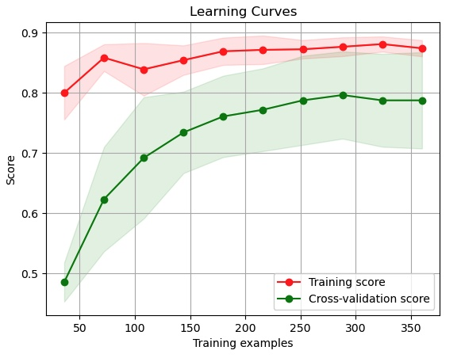
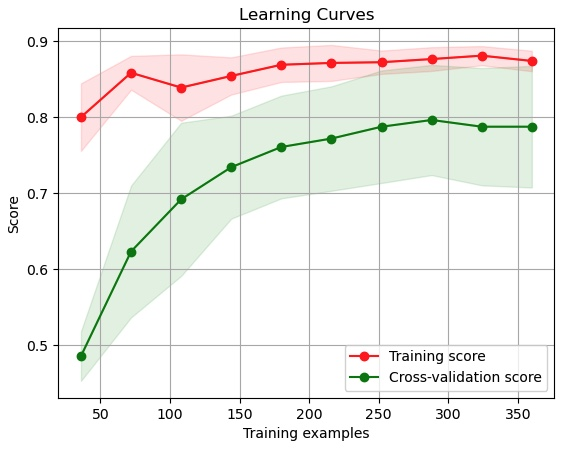

Projects
NFL 2025 Big Data Bowl
Developed a random forest classifier to predict the probability of designed run plays vs. pass plays for the San Francisco 49ers.
ETL Pipeline
Built an ETL pipeline that transforms Community Transit’s public GTFS data into a relational database using Python and PostgreSQL.
NFL 2025 Big Data Bowl
Overview
This machine learning model was developed to give NFL defenses a competitive advantage against the San Francisco 49ers by predicting the probability of designed run plays versus pass plays based on pre-snap alignment and game situation. The model enables defensive coordinators to make informed audibles that could disrupt offensive strategies.
Data Source & Processing
The dataset was supplied by the NFL, covering weeks 1-6 of the 2023 season and focusing exclusively on San Francisco's offensive plays. After removing QB kneels and compressing data by gameID and playID, the final dataset contained 451 plays across seven engineered features. This clean, focused dataset provided a robust foundation for training the predictive model.
Target Variable
The target variable is binary: (1) for designed running plays and (0) for pass plays. To emphasize strategic play-calling analysis, QB scrambles were excluded from designed runs, ensuring the model focused on intentional offensive schemes rather than impromptu decisions.
Model Architecture & Performance
The random forest classifier was selected for its ability to handle the imbalanced dataset (194 run plays vs. 257 pass plays) using class weights to prevent bias. The model achieved strong performance metrics with 80.9% accuracy and 87.4% ROC AUC. Given the high cost of defensive misalignment, the model prioritized precision, achieving 81% accuracy for pass plays and 79% for run plays.
Classification Results:
precision recall f1-score support
Pass 0.82 0.84 0.83 77
Run 0.79 0.76 0.78 59
Feature Engineering & Selection
Features were selected based on factors that significantly influence offensive play-calling decisions. Each feature underwent appropriate preprocessing techniques:
- offenseFormation (17.76% SHAP importance) – Six formation types (SHOTGUN, SINGLEBACK, I_FORM, etc.) processed through OneHotEncoding after removing null values.
- motionSinceLineset (12.24%) – Boolean indicator of player motion after line set, with nulls imputed using KNN and binary encoding applied.
- receiverAlignment (8.81%) – Categorical alignment patterns (0x0, 1x1, 2x1, etc.) processed through OneHotEncoding.
- presnap_score_difference (3.79%) – Engineered feature capturing score-based play-calling tendencies (positive when SF leads, negative when trailing), standardized for model input.
- down_yardsToGo (3.54%) – Custom feature multiplying down number by yards to go, creating an expanded scale that penalizes late downs with high yardage needs.
- gameClock_seconds (2.04%) – Game clock converted from MM:SS format to seconds and standardized.
- shiftSinceLineset (2.00%) – Boolean indicating player shifts greater than 2.5 yards from line set position, binary encoded after dropping null values.
Feature Correlation Analysis
Correlation analysis revealed clear patterns distinguishing run vs. pass tendencies:
Strong Run Indicators (Positive Correlation):
- I_FORM formation (0.407)
- 2x1 receiver alignment (0.384)
- Positive score difference (0.282)
- SINGLEBACK formation (0.227)
Strong Pass Indicators (Negative Correlation):
- SHOTGUN formation (-0.379)
- High down/yards combinations (-0.349)
- Motion since line set (-0.287)
- EMPTY formation (-0.278)
Hyperparameter Optimization
The model underwent iterative hyperparameter tuning using grid search, optimizing for ROC AUC and precision. Cross-validation monitoring prevented overfitting, achieving a mean CV score of 88.4% with low variability (2.6% standard deviation).
Optimal Parameters:
- bootstrap: False
- max_depth: 10
- max_features: 'sqrt'
- min_samples_leaf: 2
- min_samples_split: 25
- n_estimators: 300
Model Validation & Learning Curves

 

The learning curve analysis shows strong model performance with training data fitting well as dataset size increases. A slight gap between training and validation scores suggests minor overfitting that could benefit from additional training data. Both curves level off, indicating the model has reached a performance plateau with current data volume.
Practical Applications & Business Impact
This model provides defensive coordinators with actionable intelligence to anticipate offensive play calls with 80.9% accuracy. The high confidence intervals enable real-time defensive adjustments that could significantly impact game outcomes, particularly in critical down-and-distance situations.
Limitations & Future Enhancements
While the model demonstrates strong predictive capability, several areas present opportunities for improvement. Weekly retraining would be essential to capture evolving team tendencies throughout the season, with potential implementation of time-decay weighting to emphasize recent games. Future iterations could incorporate player personnel packages, injury reports, and specific player tendencies (e.g., Christian McCaffrey's presence) to enhance prediction accuracy and provide more granular insights for defensive strategy.